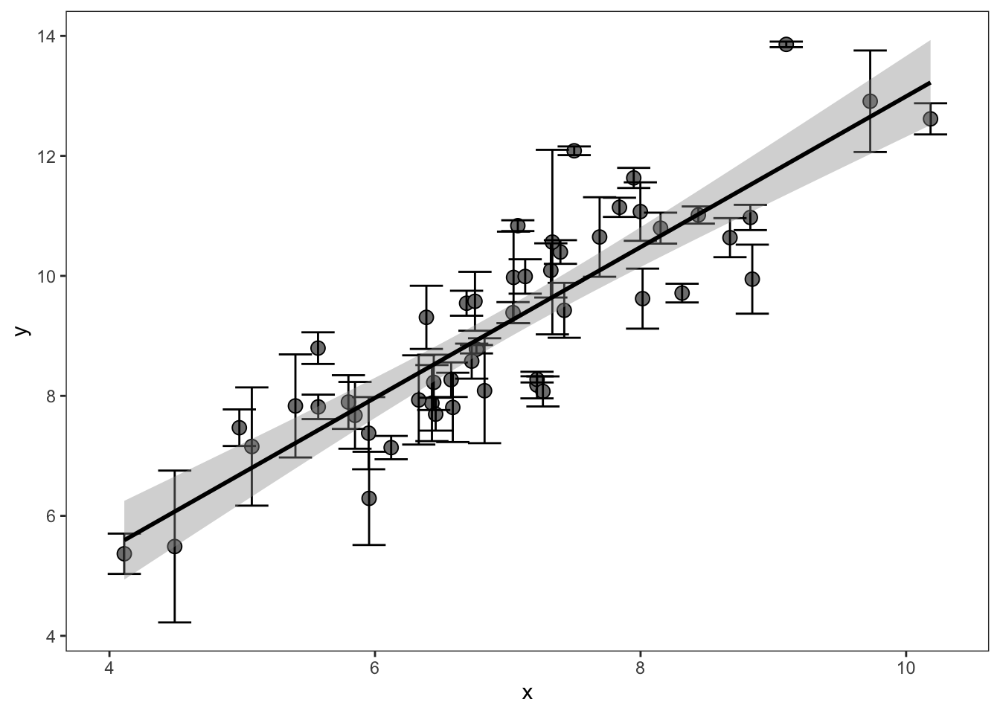
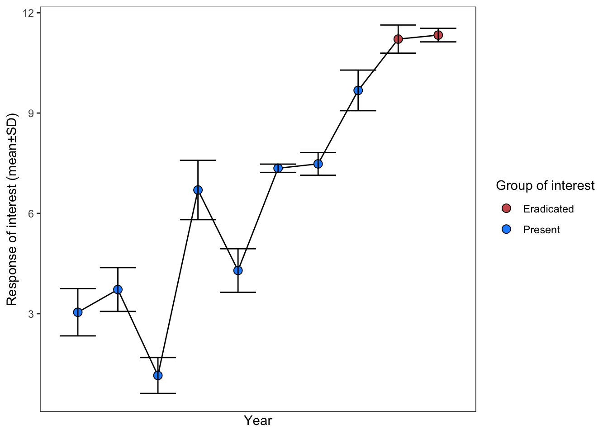

Simulating non-Gaussian data
Additional, homeless helpers
We have briefly described tricks for recreating data from means±error, which you might encounter in error bars on a scatterplot (see (sec?)) or in a time series that you’d prefer to analyze as SMD (see (sec?)). For example, in a figure like this:
Or, like this:

If the data in these figures (underlying each point) is normally distributed you can use rnorm to simulate the original dataset based on the means, standard deviations, and sample sizes (as our code in those sections demonstrated). This allows you to calculate effect sizes on results that may otherwise be unextractable. However, this assumes that data is normally distributed, which may be not be true in the case of ecological or evolutionary data.
Is this actually ok to do?
Determing the correct distribution
To understand whether the underlying data can be drawn safely from the normal distribution, you need to think carefully about the data generating process.
- Is the data discrete, e.g., count data or abundance data?
Abundance data generally follows a negative binomial or Poisson distribution. Data bounded between 0 and 1 (e.g., cover data) follows the Beta distribution.
- What is the relationship between the means and reported error?
In normally distributed data the coefficient of variation (\(sd/m\)) should be <X. The variance (\(sd^2\)) of Poisson type data should be equal to the mean (which is unusual) In negative binomial data, the variance should be greater than the mean.
Use these rules of thumb to help decide what distribution the underlying data is. Once you have a good idea, you then need to use distributionally specific formulas to convert the author-provided summary statistics (mean, standard deviation) to the distribution’s own flavors. For example, negative binomial uses size instead of standard deviation to describe its dispersion. Luckily, as we show below, converting standard deviation to size is quite doable.
Here is a table of the parameters necessary to simulate data in most distributions you’ll encounter during a meta-analysis, along with the formulas to convert standard deviation to these parameters.
| distribution | diagnosis | common applications |
|---|---|---|
| Normal | continuous; XXXX; \(CV < XXXX\) | XXXX |
| Negative binomial | count; Variance > mean | Abundance data, XXX |
| Poisson | count; Variance ≈ mean | Count data, XXX |
| Binomial | probability (0-1) across trials; \(msd < \sqrt(m)\) | success, survivorship, survival |
| Beta | proportion bounded between 0 and 1 | Cover data, XXXX |
Negative binomial
We will here simulate the underlying data for negative binomial derived abundance data, as you might encounter in a time series (similar to the figure above).
The object dt here is a dataset extracted from an article with Mean±SD for two groups in a time series (similar data as in (sec?)). We want to generate the underlying data for each point, so we can calculate group level mean±SD for the two treatments (“Present” vs “Eradicated”). The data looks like this:
| status | mean | sd | N |
|---|---|---|---|
| Present | 1.1524651 | 1.0745293 | 10 |
| Present | 0.6170123 | 0.7865013 | 10 |
| Present | 2.9255908 | 1.7114358 | 10 |
| Present | 5.4405181 | 2.3334918 | 10 |
| Present | 6.5707700 | 2.5643513 | 10 |
| Present | 6.9582480 | 2.6388491 | 10 |
| Present | 9.0049238 | 3.0018205 | 10 |
| Present | 8.9468565 | 2.9921296 | 10 |
| Eradicated | 8.3295040 | 2.8870880 | 10 |
| Eradicated | 9.5688325 | 3.0943530 | 10 |
Note that the standard deviation has a positive relationship with the mean, which is an indicator that this data is derived from a negative binomial distribution.
Now let’s convert the author provided sd to size, which is the parameter that describes the dispersion of the negative binomial family. This is based on the following relationship:
\[\begin{aligned}
Variance = \mu + \frac{\mu^2}{size}
\end{aligned}\] Solving for size (which is the negative binomial flavor of standard deviation): \[\begin{aligned}
size = \frac{\mu^2}{Variance - \mu}
\end{aligned}\] Note that Variance must be greater than the mean for the negative binomial distribution. As such, if some of our data has a Variance < the mean, we’ll set Variance equal to the mean.
# First, calculate the size dispersion parameter:
dt[, var := sd^2]
dt[, size := mean^2 / (var - mean)]
dt[var < mean, var := mean]
# Now expand dataset with rnbinom:
dt_expanded <- list()
for(i in 1:nrow(dt)){
dt_expanded[[i]] <- data.table(y = rnbinom(mu = dt$mean[i],
size = dt$size[i],
n = dt$N[i]),
status = dt$status[i])
}
dt_expanded <- rbindlist(dt_expanded)
# Now summarize to calculate our effect size of interest:
final_dt <- dt_expanded[, .(mean = mean(y),
sd = sd(y),
total_n = .N),
by = .(status)]
final_dt| status | mean | sd | total_n |
|---|---|---|---|
| Present | 4.9625 | 3.388154 | 80 |
| Eradicated | 10.4000 | 3.560012 | 20 |
These values can then be used to calculate your SMD / lnRoM / Zmu effect size.
Is this really ok to do???
Poisson
The Poisson distribution takes lambda, which is equivalent to the mean. The variance and the mean must be equal to be Poisson data.
To draw Poisson data, use the R function rpois, as follows:
rpois(n = 10, lambda = 1) [1] 3 1 0 0 1 1 1 0 0 0Binomial
The binomial distribution describes the probability of success (\(p\)) across \(t\) trials per \(n\) observation (note that \(m\) is usually used for number of trials in binomial formulas but, since we are referring to means as \(m\), we will refer to number of trials as \(t\)). \(p\) can be calculated from author-provided standard deviation (\(sd\)) and means (\(m\)) as follows:
\[ p=1-\frac{sd^2}{m} \] Note that standard deviation must be less the square root of the mean.
You can then draw binomial data in R, with size equivalent to the number of trials (\(t\)). The number of trials may be difficult to determine unless the data is clearly binomial (e.g., number of events per plot or individual). In the code below, we’re simulating data for 10 individuals (or plots) that had a probability of 0.4 and experienced 5 events. The output describes the number of successful trials per 10 individuals, which can be converted to a proportion by dividing by size:
rbinom(n = 10, p = .4, size = 5) / 5 [1] 0.4 0.4 0.4 0.0 0.6 0.6 0.4 0.2 0.6 0.4Am I butchering this? Probably :)
Beta
The Beta distribution describes data bounded between 0 and 1. Plant cover data is Beta distributed. The Beta distribution has two shape parameters (shape1=\(\alpha\) and shape2=\(\beta\)). These can be calculated from mean (\(m\)) and standard deviation (\(sd\)) as follows:
\[ \begin{aligned} & Var = sd^2 \\ & t = (\frac{m(1-m)}{Var}) - 1\\ & \alpha = m * t \\ & \beta = (1-m) * t \\ \end{aligned} \] These parameters can then be used in R. For instance, with a mean of 0.75 (e.g., 75% cover) and a standard deviation of 0.1:
sd <- 0.1
m <- 0.75
v <- sd^2
t <- ((m * (1-m)) / (v)) - 1
alpha <- m * t
beta <- (1 - m) * t
rbeta(n = 10, shape1 = alpha, shape2 = beta) [1] 0.8140232 0.8396723 0.7494982 0.6264103 0.7799289 0.7816760 0.6826897
[8] 0.7129854 0.8306954 0.8129628